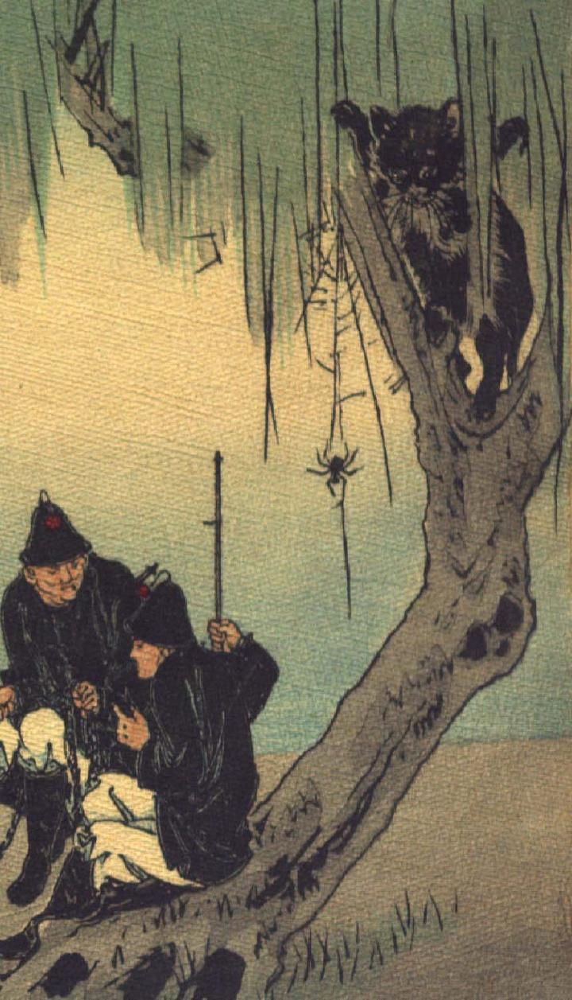

黒猫。柳のような木の股に、後脚で立ち、下の様子をうかがっている。木の根元には兵士のような姿の人間が2人座っている。
著作者：John Little Archibald／出典：親書誌：U426_nichibunken_0122：The rat's plaint／日付：2006／資源識別子：U426_nichibunken_0122_0005_0000
Copyright (c)2010- International Research Center for Japanese Studies, Kyoto, Japan. All rights reserved.